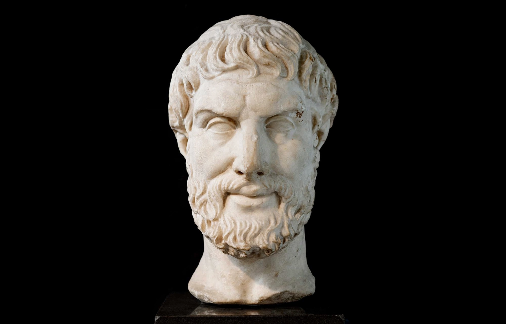

From Wikipedia, the free encyclopedia
| Epicurus | |
|---|---|
| Born | 341 BC, Samos |
| Died | 270 BC, Athens |
| School | Epicureanism (founder) |
| Notable ideas | Pleasure as absence of pain (ataraxia, aponia); the tetrapharmakos; atomic swerve |

Epicurus (341–270 BC) was an ancient Greek philosopher who founded Epicureanism, one of the most influential schools of the Hellenistic world. In his Athens school, the Garden — unusually open to women and slaves — he taught that pleasure, correctly understood as the absence of pain in body (aponia) and trouble in mind (ataraxia), is the goal of life; most desires are empty, friendships are life's greatest security, and the gods, though real, do not intervene — so death is nothing to us, 'for when we exist, death is not; and when death exists, we are not'.
Epicurus adopted Democritus's atomism, adding a random 'swerve' (clinamen) to break causal chains and make free will possible — expounded in Lucretius's Latin poem De Rerum Natura, whose rediscovery in 1417 helped ignite the Renaissance. Slender surviving letters and maxims belie the school's 700-year life; his name survives distorted in 'epicurean' indulgence, almost the opposite of his frugal doctrine.